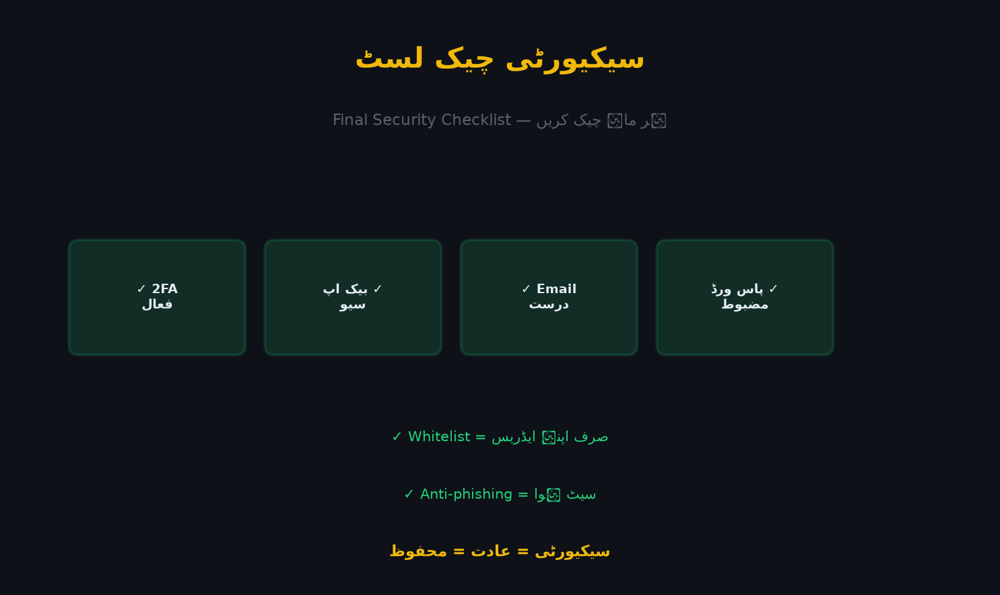

اب تک آپ نے سیکیورٹی کے ہر پہلو کا مطالعہ کیا ہے۔ یہ باب اُن سب کو ایک عملی، دہرائے جانے والے نظام میں ڈھالتا ہے — تاکہ سیکیورٹی "ایک دن کا کام" نہ رہے، بلکہ آپ کی عادت بن جائے۔

| # | چیز | ہونا چاہیے | حیثیت |
|---|---|---|---|
| 1 | Passkey / Authenticator (2FA) | فعال | ☐ |
| 2 | Recovery Codes | کاغذ پر محفوظ | ☐ |
| 3 | Anti-Phishing Code | سیٹ | ☐ |
| 4 | Withdrawal Whitelist | صرف اپنے ایڈریس | ☐ |
| 5 | ای میل | محفوظ + قابلِ رسائی | ☐ |
| 6 | فون نمبر | درست + SIM-PIN | ☐ |
| 7 | پاس ورڈ | لمبا، منفرد | ☐ |
| 8 | Device Management | صرف اپنے ڈیوائسز | ☐ |
| 9 | Account Activity | کوئی غیر معمولی سرگرمی نہیں | ☐ |
| 10 | Support راستہ | صرف سرکاری چینل | ☐ |
💡 10 میں سے 10 ہونا چاہیے۔ ایک بھی خانہ خالی ہو تو وہی آپ کا سب سے کمزور حصہ ہے۔
☐ Account Activity / Devices پر نظر
☐ کوئی نئی لاگ اِن؟ کوئی نئی API key؟
☐ ای میل میں کوئی مشکوک پیغام؟☐ Recovery Codes موجود اور محفوظ؟
☐ Anti-Phishing Code چل رہا ہے؟
☐ Whitelist میں صرف اپنے ایڈریس؟
☐ پاس ورڈ کی تاریخ (پرانا ہو تو بدلیں)
☐ 2FA کے دونوں راستے کام کر رہے ہیں؟☐ تمام سیکیورٹی سیٹنگز کا مکمل معائنہ
☐ پرانے ڈیوائسز اور API keys ہٹائیں
☐ ای میل اکاؤنٹ کی دو مرحلوں والی تصدیق چیک کریں☐ مکمل "سیکیورٹی آڈٹ" (checklist کی تصدیق)
☐ پرانے پاس ورڈ بدلیں
☐ اپنے تجارتی جرنل میں نتائج درج کریںاگر آپ کو شک ہو کہ اکاؤنٹ خطرے میں ہے — اسی ترتیب سے عمل کریں:
1. فوراً پاس ورڈ تبدیل کریں
2. تمام ڈیوائسز سے لاگ آؤٹ کریں
3. 2FA اور Recovery Codes دوبارہ سیٹ کریں
4. Whitelist چیک کریں — کوئی اجنبی ایڈریس؟ حذف کریں
5. کوئی اجنبی API key؟ حذف کریں
6. بائننس Support کو مطلع کریں (Case کھولیں)
7. اپنی باقی سائٹس پر بھی پاس ورڈ بدلیں (اگر وہی تھا)🔴 اگر Add-Ins یا آلہ کار جیسے malware کا شبہ ہو تو کمپیوٹر بھی صاف کریں — صرف پاس ورڈ بدلنا کافی نہیں۔
• میرا 2FA طریقہ: __________________
• میرا دوسرا 2FA طریقہ: __________________
• Recovery Codes کی جگہ: __________________
• Anti-Phishing Code: __________________
• محفوظ ایڈریس کی فہرست: __________________
• بحرانی رابطہ (ای میل): __________________
• ماہانہ چیک کے دن: __________________💡 اس پلان کو کاغذ پر لکھیں۔ سیکیورٹی کا اصل راز عادت ہے، نہ کہ صرف سیٹنگ۔
سیکیورٹی ایک عادت ہے، کوئی ایک ہیروئیک حرکت نہیں۔ جس طرح دانت روز برش کرنے سے سلامت رہتے ہیں، ویسے ہی اکاؤنٹ ماہانہ معمول کے چیک سے محفوظ رہتا ہے۔
آج ایک 10 منٹ کا معائنہ کریں — اور ہر ماہ دہرائیں۔ یاد رکھیں: "سیکیورٹی = معمول = محفوظ اثاثے"۔